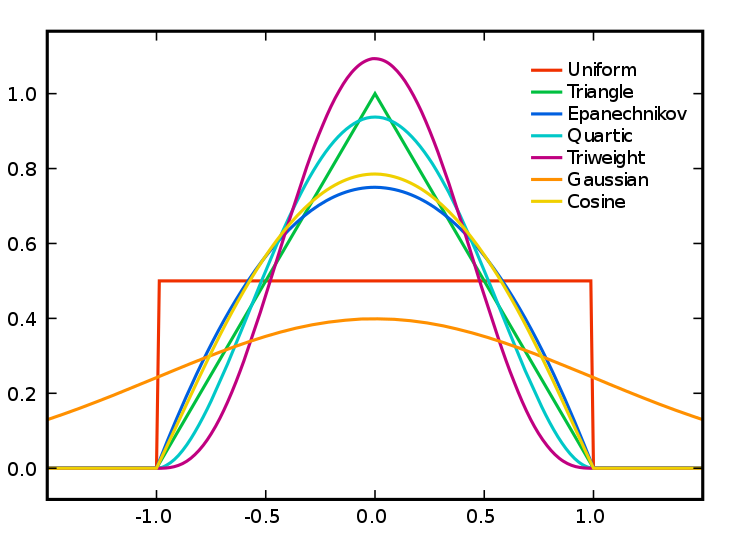
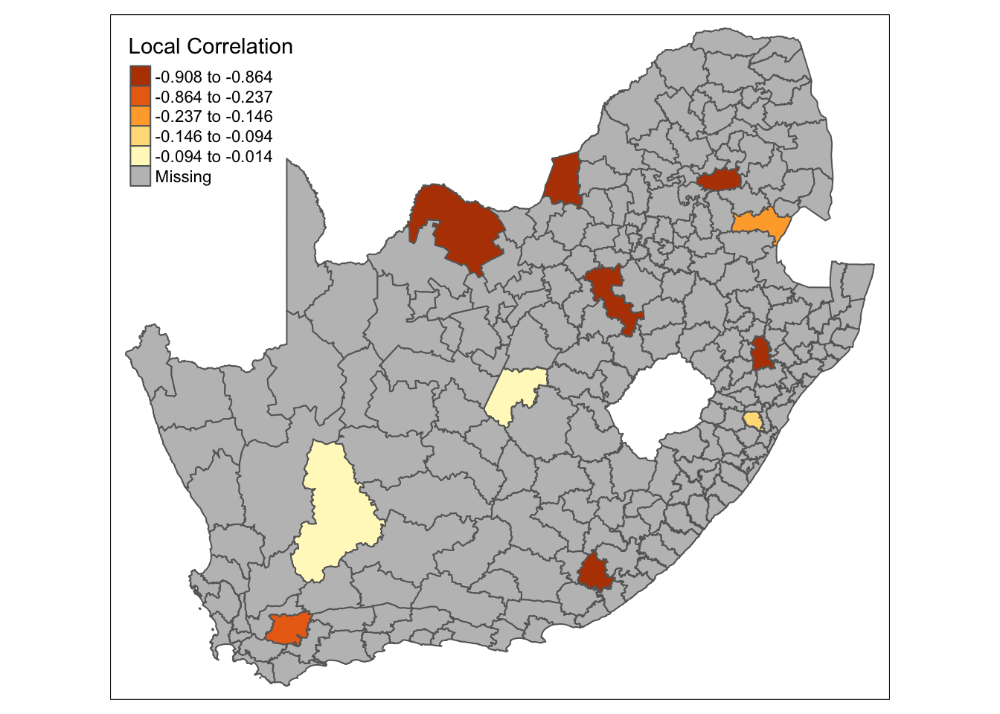

4 Spatial Models
4.1 Loading spatial data
Open a new script within your Geospatial-Workshop24 project and save this as 04-spatial-models.r. As usual, we will begin by loading the necessary libraries. This time, you should load:
R code
# load libraries
library(tidyverse)
library(sf)
library(tmap)
library(GWmodel)4.2 Geographically weighted statistics
In the previous session, we explored identifying and measuring patterns of spatial autocorrelation (clustering) in data. If such patterns exist, we can potentially exploit them by creating local summary statistics for geographical areas using the GWmodel library.
In this session, we will continue to look at the mn_no_school variable at the municipal level. We will further use a second dataset containing the average age by municipality (mn_avg_age), aggregated from the South African Census Community Profiles 2011. You can download this files below and save it in your project folder under data/attributes.
| File | Type | Link |
|---|---|---|
| SA Census 2011 Average Age Variable | csv |
Download |
To download the csv file containing the mn_avg_age variable that is hosted on GitHub, click on the Download raw file button on the top right of your screen and it should download directly to your computer.
Once downloaded, we can load both files into memory together with our spatial data file:
R code
# load spatial data
sa_municipality <- st_read("data/spatial/municipality-south-africa-2013.gpkg")Reading layer `municipality-south-africa-2013' from data source
`/Users/justinvandijk/Library/CloudStorage/Dropbox/UCL/Web/jtvandijk.github.io/SA-TIED/data/spatial/municipality-south-africa-2013.gpkg'
using driver `GPKG'
Simple feature collection with 234 features and 19 fields
Geometry type: MULTIPOLYGON
Dimension: XY
Bounding box: xmin: 1831416 ymin: -4141363 xmax: 3667419 ymax: -2526543
Projected CRS: WGS 84 / Pseudo-Mercator# load attribute data
sa_no_schooling <- read_csv("data/attributes/sa-no-schooling.csv")Rows: 234 Columns: 4
── Column specification ────────────────────────────────────────────────────────
Delimiter: ","
chr (1): mn_name
dbl (3): mn_code, mn_pop, mn_no_school
ℹ Use `spec()` to retrieve the full column specification for this data.
ℹ Specify the column types or set `show_col_types = FALSE` to quiet this message.# load attribute data
sa_average_age <- read_csv("data/attributes/sa-average-age.csv")Rows: 234 Columns: 4
── Column specification ────────────────────────────────────────────────────────
Delimiter: ","
chr (1): mn_name
dbl (3): mn_code, mn_pop, mn_avg_age
ℹ Use `spec()` to retrieve the full column specification for this data.
ℹ Specify the column types or set `show_col_types = FALSE` to quiet this message.You can inspect all objects using the View() function.
Let us start by combining all three datasets:
R code
# calculate proportions
sa_no_schooling <- sa_no_schooling |>
mutate(mn_no_school_prop = round(mn_no_school/mn_pop, 3)) |>
select(mn_code, mn_no_school_prop)
# join attribute data onto spatial data
sa_municipality <- sa_municipality |>
left_join(sa_no_schooling, by = c("mn_code" = "mn_code")) |>
left_join(sa_average_age, by = c("mn_code" = "mn_code"))The GWmodel library uses the older sp data format for handling spatial data. We therefore need to covnert our current sf object to sp before continuing:
R code
# to sp
sa_municipality_sp <- as_Spatial(sa_municipality)The sf package in R is now favoured over the sp package due to its more modern and efficient handling of spatial data. sf uses simple features, which are a standardised way to store and manipulate spatial geometries, making it more compatible with other geospatial tools and software. It also integrates more seamlessly with the tidyverse ecosystem, allowing for easier data manipulation and analysis. Additionally, sf offers better performance, simpler syntax, and enhanced support for spatial operations compared to sp.
We can use the GWmodel to calculate statistics such as local means, local standard deviations, and local variances. As with autocorrelation, this raises the question: what is considered local? One approach is to use a kernel function to determine which values should contribute to the local estimates. These kernels operate on point location data (e.g. polygon centroids) and overlay a window of a specific shape and bandwidth on each point to derive local estimates. The bandwidth, which refers to the kernel’s size, can be measured in absolute terms (e.g. including all polygon centroids within 10km) or relative terms (e.g. including the 10 nearest centroids), with the latter known as an adaptive kernel. While bandwidth typically has a greater impact on density estimation than the kernel type, the choice of kernel can also influence the results by weighting the points within the kernel differently.
Let’s calculate the geographically weighted mean value for the mn_no_school_prop and mn_avg_age variables using an adaptive bandwidth of 25 neighbours and a bisquare kernel:
R code
# geographically weighted statistics: no schooling
sa_gwss_no_schooling <- gwss(sa_municipality_sp, vars = "mn_no_school_prop", bw = 25,
kernel = "bisquare", adaptive = TRUE, longlat = TRUE)
# geographically weighted statistics: average age
sa_gwss_average_age <- gwss(sa_municipality_sp, vars = "mn_avg_age", bw = 25, kernel = "bisquare",
adaptive = TRUE, longlat = TRUE)The results of the outcomes of gwss function can be accessed through the $SDF data frame.
We can extract the values and bind these to our original sf dataset as follows:
R code
# names
names(sa_gwss_no_schooling$SDF)[1] "mn_no_school_prop_LM" "mn_no_school_prop_LSD" "mn_no_school_prop_LVar"
[4] "mn_no_school_prop_LSKe" "mn_no_school_prop_LCV" names(sa_gwss_average_age$SDF)[1] "mn_avg_age_LM" "mn_avg_age_LSD" "mn_avg_age_LVar" "mn_avg_age_LSKe"
[5] "mn_avg_age_LCV" # extract local means
sa_municipality$mn_no_schooling_LM25 <- sa_gwss_no_schooling$SDF$mn_no_school_prop_LM
sa_municipality$mn_average_age_LM25 <- sa_gwss_average_age$SDF$mn_avg_age_LMWe can now create a simple map of the local mean values of the mn_no_school variable:
R code
# shape, polygons
tm_shape(sa_municipality) +
# specify column, classes
tm_polygons(
col = "mn_no_schooling_LM25",
n = 5,
style = "jenks",
title = "Local Mean"
)mn_no_school variable.And we can do the same for the mn_average_age variable:
R code
# shape, polygons
tm_shape(sa_municipality) +
# specify column, classes
tm_polygons(
col = "mn_average_age_LM25",
n = 5,
style = "jenks",
title = "Local Mean"
)mn_average age variable.Both maps show that there is some clear variation in both mean values across the country.
As in the previous session, the resulting maps are influenced by the geographical weighting applied, which is largely determined by the bandwidth. There is no definitive answer for selecting the optimal bandwidth, though automatic selectors, such as those based on cross-validation, can help guide the choice (e.g. bw.gwr(mn_no_school_prop ~ 1, data = sa_municipality_sp, adaptive = TRUE, kernel = "bisquare", longlat = T)). If you were to run the code above on our current variables, the automatic procedure suggests to consider rather large bandwidths. This suggests that the area we are analysing could be too extensive for detailed local analysis.
4.3 Geographically weighted correlation
We can also decompose bivariate relationship by geographical areas. For instance, we can compare the global correlation and break down to what extent the association between two variables is consistent over space. Let us first look at the association between our mn_no_school_prop and mn_avg_age variables:
R code
# bivariate plot
plot(sa_municipality$mn_no_school_prop, sa_municipality$mn_avg_age, xlab = "No schooling",
ylab = "Average Age")mn_no_school_prop and mn_avg_age variables.R code
# correlation
cor(sa_municipality$mn_no_school_prop, sa_municipality$mn_avg_age)[1] -0.5705525Figure 4 and the Pearson correlation coefficient suggests a moderate negative association between the proportion of people without schooling an the average age at the municipal level.
Sometimes heteroscedasticity is indicative of a geographically varying relationship and it is worth considering calculating a geographically weighted correlation.
Using the same bandwidth as before, we can derive a localised correlation as follows:
R code
# geographically weighted statistics: correlation
sa_gwss_cor <- gwss(sa_municipality_sp, vars = c("mn_no_school_prop", "mn_avg_age"),
bw = 25, kernel = "bisquare", adaptive = TRUE, longlat = T)We can now extract the values and bind these back to our original sf object:
R code
# extract correlation
sa_municipality$mn_noschool_age_cor <- sa_gwss_cor$SDF$Corr_mn_no_school_prop.mn_avg_age
# inspect
summary(sa_municipality$mn_noschool_age_cor) Min. 1st Qu. Median Mean 3rd Qu. Max.
-0.90804 -0.71461 -0.63113 -0.58882 -0.48593 -0.01354 The summary shows that there indeed seems to be variation of this relationship across the country, with the local Pearson correlation ranging from very weak to very strong, althoug the direction seems to be consistent. Of course, we can map this in the usual way:
R code
# shape, polygons
tm_shape(sa_municipality) +
# specify column, classes
tm_polygons(
col = "mn_noschool_age_cor",
n = 5,
style = "jenks",
title = "Local Correlation"
)mn_no_school and mn_avg_age variable.What the map does not tell us is whether the correlations are significant. We can test for this using a Monte Carlo simulation:
R code
# test for significance, only select relevant column
sa_gwss_cor_sig <- gwss.montecarlo(sa_municipality_sp, vars = c("mn_no_school_prop",
"mn_avg_age"), bw = 25, kernel = "bisquare", adaptive = TRUE, longlat = T) |>
as_tibble() |>
select(Corr_mn_no_school_prop.mn_avg_age)
# replace names
names(sa_gwss_cor_sig) <- "mn_no_school_age_cor_p"We can bind the results back to the original sf dataframe. We then can create a column containing only the correlations that show as significant and use tmap to plot these:
R code
# bind results
sa_municipality <- sa_municipality |>
cbind(sa_gwss_cor_sig) |>
mutate(sa_gwss_cor = if_else(mn_no_school_age_cor_p < 0.025, mn_noschool_age_cor,
if_else(mn_no_school_age_cor_p > 0.975, mn_noschool_age_cor, NA)
))
# shape, polygons
tm_shape(sa_municipality) +
# specify column, classes
tm_polygons(
col = "sa_gwss_cor",
n = 5,
style = "jenks",
title = "Local Correlation"
)
mn_no_school and mn_avg_age variable.4.4 Spatial regression
We looked at geographically weighted statistics, including geographically weighted correlation, which examines whether the correlation between two variables varies across space. However, whilst out of the scope of this workshop, these concepts can be extended to regression modelling. Examples of such models are the spatial error model, spatial lag model, and geographically weighted regression.
4.4.1 Spatial error model
The spatial error model is used when the error terms in a regression model exhibit spatial autocorrelation, meaning the error terms are not independent across space. This can happen due to omitted variables that have a spatial pattern or unmeasured factors that affect the dependent variable similarly across nearby locations.
The model adjusts for spatial autocorrelation by adding a spatially lagged error term (a weighted sum of the errors from neighbouring locations) to the regression equation:
\[ y = X\beta + \upsilon, \upsilon = \lambda W \upsilon + \epsilon \]
where \(X\beta\) represents the standard regression components, \(\lambda\) is a spatial autoregressive parameter, \(W\) is a spatial weights matrix, and \(\upsilon\) is a vector of spatially autocorrelated errors.
Spatial error models can be fitted using R’s spatialreg package.
4.4.2 Spatial lag model
The spatial lag model is appropriate when the dependent variable itself exhibits spatial dependence. This means the value of the dependent variable in one location depends on the values in neighbouring locations. This model is used to capture the spillover effects or diffusion processes, where the outcome in one area is influenced by outcomes in nearby areas (e.g. house prices, crime rates).
The model incorporates a spatially lagged dependent variable, which is the weighted sum of the dependent variable values in neighbouring locations, into the regression equation:
\[ y = \rho Wy + X\beta + \epsilon \]
where \(\rho\) is the spatial autoregressive coefficient, \(Wy\) represents the spatially lagged dependent variable, and \(X\beta\) represents the standard regression components.
Spatial lag models can be fitted using R’s spatialreg package.
4.4.3 Geographically weighted regression
Geographically weighted regression (GWR) is used when the relationship between the dependent and independent variables is not constant across space, meaning the model coefficients vary by location. This is useful when you suspect that the relationship between variables may change depending on the geographic context. GWR provides a localised understanding of the relationships by allowing each observation to have its own set of regression coefficients, which can provide insights into how relationships differ across the study area.
GWR fits a separate regression equation at each location in the study area, weighting nearby observations more heavily than those farther away. The weighting is typically based on a kernel function. The basic GWR equation is:
\[ y_{i} = \beta_{0}(\upsilon_{i}, v_{i}) + \sum_{k=1}^{p}\beta_{k}(\upsilon_{i}, v_{i})x_{ik} + \epsilon_{i} \]
where \((\upsilon_{i}, v_{i})\) are the coordinates of location \(i\) and \(\beta_{k}(\upsilon_{i}, v_{i})\) are the location-specific coefficients. The geographically weighted correlation that we calculated is therefore essentially a univariate GWR.
The GWmodel R package can be used to run a GWR, including a multiscale geographically weighted regression (GWRs) that accommodates different bandwidths for each variable. However, these models can be computationally intensive, especially with large datasets.
To get started with Geographically Weighted Regression, the Spatial Modelling for Data Scientists course by Liverpool-based Professors Francisco Rowe and Dani Arribas-Bel provides an excellent introduction.
4.4.4 To note
The spatial error model adjusts for spatial autocorrelation in the error terms, whereas the spatial lag model adjusts for spatial dependence in the dependent variable itself. The spatial error model does not alter the interpretation of the coefficients of the independent variables, while the spatial lag model introduces a feedback loop where changes in one area can influence neighbouring areas.
Both the spatial error and spatial lag models assume that the relationships between variables are the same across the study area, with adjustments made only for spatial dependencies. GWR, on the other hand, allows the relationships themselves to vary across space. GWR is more flexible but also more complex and computationally intensive, providing local instead of global estimates of coefficients.
4.5 Assignment [Optional]
This concludes this session. Please try to complete the following tasks:
- Download the three datasets below to your computer. These include a
GeoPackageof the 2011 electoral ward boundaries for the Western Cape, acsvfile detailing the percentage of the population within each ward at the highest level of education, and acsvfile showing the percentage of the population within each ward by income category. - Create a new variable in the
educationdataset representing the percentage of the population within each ward that has at least ahigher diploma. - Create another variable in the
incomedataset representing the percentage of the population within each ward that earns at leastZAR 25,601. - Join all the data together and then:
- Calculate the geographically weighted means for your new
educationvariable, selecting the optimal bandwidth using an automatic selector. - Calculate the geographically weighted means for your new
incomevariable, selecting the optimal bandwidth using an automatic selector. - Calculate the geographically weighted correlation between the
educationandincomevariables, again selecting the optimal bandwidth using an automatic selector.
- Calculate the geographically weighted means for your new
- Map the geographically weighted correlation coefficients.
| File | Type | Link |
|---|---|---|
| Western Cape Electoral Wards | GeoPackage |
Download |
| SA Census 2011 Income Table | csv |
Download |
| SA Census 2011 Education Table | csv |
Download |
These datasets have been sourced from the StatsSA Superweb table builder and have subsequently been slightly cleaned.